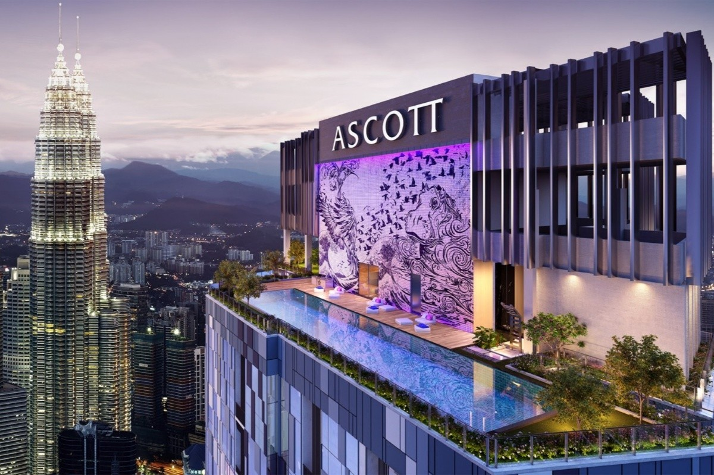
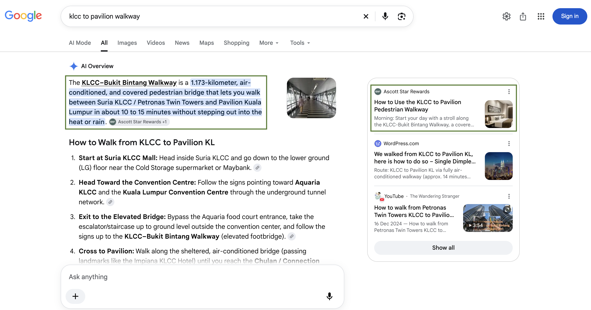
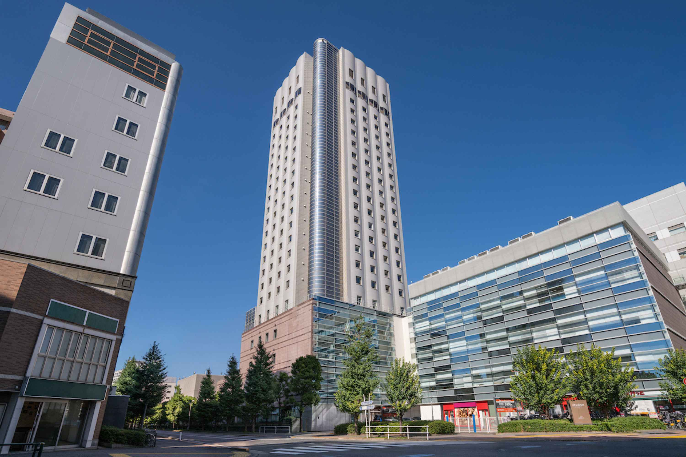

Selected Project · DiscoverASR
Ascott
Content Strategy & Property Copywriting.
Content planning, briefs, editing, and copywriting for destination and property pages.
See My Work, Up Close ↘
Brand Performance
Performance at a Glance
Website Results · A Shared Team Effort
Record Quarterly Organic Impressions
+25% YoY
Average Google Position Across the Platform
About the Brand
The Ascott Limited is a global lodging business under CapitaLand Investment. DiscoverASR brings its serviced residences, hotels, and other stay options together on one platform.
About Ascott ↗Project Objective
Help travelers discover Ascott through useful destination and accommodation content, strengthening its visibility in organic search and its presence in AI-generated answers.
03
My Contribution
I planned content, prepared and edited briefs, and edited articles. I also researched keywords and wrote copy for new property pages.
My Work, Up Close
Selected Work Samples.
Content planning, editing, and property page optimization.

01Destination ContentKLCC to Pavilion
KLCC to Pavilion
Walkway Guide
A walkway guide for travelers exploring Kuala Lumpur.
2,206 Clicks83,984 impressions · Google Search Console22 Mar–31 Oct 2026
Explore the Content Sample ↗
02Citadines North Shinjuku TokyoNew Property OptimizationProperty Page
Property Page
Optimization
Keyword research and page copy for Citadines North Shinjuku Tokyo.
1,244 Clicks14,764 impressions · Google Search Console7 Aug–31 Oct 2026 · Following the copy update
Explore Property Optimization ↗ 03
03Content Planning & AI SearchLong Stays Around
Long Stays Around
Shinjuku & Central Tokyo
Content planned around the needs of people relocating or taking an extended business trip.
Mentioned & CitedOakwood in the answer · DiscoverASR in the sourcesCaptured Google AI Overview
Explore the AI Search Sample ↗